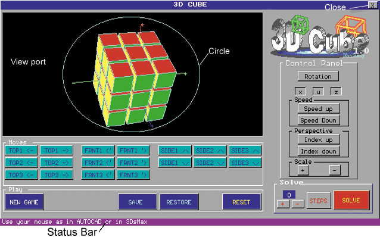

3Dcube
Trillions of
problems Single Solution !
(DOS based simple 3D cube
game.)
The
world around us is 3 dimensional. But what our eyes can perceive is always 2D. It
is our mind that makes things 3D.It analyses the movement vectors (Matrix
transform), compares the size with normal size (Scaling), determines the odder
(z-order), and analyses the two slightly different images from 2 eyes
(implemented in VR tech) to make the world 3D.
This program is the reverse algorithm. 3D model is projected in 2D screen.
A piece to show my passion for 3D.
Acknowledgement:
I am indebted to our respected sir Mr. JKP and classmates for suggestion and advice in preparing this project. I would specially like to thank my brother Nammy and Santosh for finding bugs in the program during its development period. There is a Move(set of moves) in this program from Nammy without which I could not have completed the solving algorithm.
I would especially like to thank Om for his worthy suggestions. A special thanks to all my friends and classmates for their suggestions and comments. I can offer here only an inadequate acknowledgement of my appreciation (which is my source of inspiration).
Background of the Project:
This project is developed as per the requirement set by Trivuban University curriculum for learning Object-Oriented programming in C++.
The concept of the project came into my mind while I was trying to solve the real cube. When I was analysing the effect of certain set of moves with a pencil and paper, I thought ‘this is not the way I’m supposed to tackle the problem as I already know the other language.’ The language I’m still craving to master is OOP.
Object Oriented concept is best known for simplifying the modelling of problem or a system. It gives us the privilege to think in the way we want to. Feature of OOP like code reusability is offer for programmer in programming level. But other features like data abstraction, encapsulation, inheritance, polymorphism, composition etc are for our intuitive thinking.
Objective of Project:
i) To be familiar with various features of OOP and implementing it for developing application program.
ii) To learn to use OOP in problem solving.
iii) To develop an algorithm that solves the popular Cube problem.
iv) To be familiar with the concepts and techniques used in 3D computer graphics and to implement them.
v) To build primitive GUI interface in 16-bit DOS mode without using any foundation classes or Win-APIs.
vi) To provide the feature of mouse interaction using interrupt service.
vii) To develop a model of cube where user (player) can interact with it using features found in 3D modelling software like 3Ds Max.
Detailing of Project:
A screenshot of the application.

Interface window is grouped as follows.
View port:
This is the port were the cube is displayed. By clicking on this view port and dragging the mouse the world coordinate and hence the orientation of cube changes. Clicking within the Circle rotates the X and Y-axis, while clicking outside it rotates Z-axis. Positive increment of y value of mouse in this case won’t always give a positive rotation, i.e. the interface is made user-friendly.
2nd mouse button + dragging changes the scale and 3rd mouse button + dragging changes perspectiveIndex.
Status bar:
This is an imitation of typical application window of MS Windows. It displays information about current state or mouse position sensitive information. This is a run-time guide for the application.
Moves:
Different buttons have corresponding move command. The positioning and naming is done accordingly for easier interface. Top, Side and Front faces are detected mathematically and most of the time it matches with our intuition.
Play:
Under this group there are 3 buttons.
·
New Game (F2 and Ctrl+F2)
This is for randomising the
cube faces. It randomly selects 15 moves (10 would have been more than enough).
·
Save (F5) saves the current cube (polygon
colours and orientation) in to memory.
·
Restore (F9) reads the last saved cube and assign
it to main cube.
· Reset (SPACE) resets cube plus global variables like speed and perspectiveIndex.
Control Panel:
Under this group there are 10 buttons. Each button is named according to its function.
· Rotation (‘r’ or ‘R’) Unlike other button it is ‘sticky’ to facilitate toggle operation. Other x, y and z buttons are for toggling X, Y and Z-axis rotation.
· Speed up (RIGHT) and Speed Down (LEFT) increments the speed of rotation (world and cube axis). Default value 12.
· Index up (UP) and Index Down (DOWN) increments the perspective index. This is actually the distance of camera from origin. Default value 500.
· Scale (+ and -) increments the scale factor. Default value 100.
Solve:
Under this group there are 4 buttons.
·
Solve
The beauty of the application lies in this button. It solves the cube taking current state of the cube as a problem. During solution this button (or SPACE or ESC) can be pressed any time to stop solving. In some condition moves may seem rather stupid but trust me it’ll eventually lead you to a complete solution!
The best way to analyse moves is to stop rotation and use delay or steps features.
Remember most of the buttons are disabled while Solve is enabled.
·
Delay + and - increments delay between moves during solution.
·
STEPS if enabled next move is called only after a key-press.
Close Button:
Simply terminates the application.
Alternative ways are ESC key or Alt + F4.
Limitation:
The program is compiled by Turbo C++(model used is huge) so only limited memory (64K each for data and stack) is available, and for this reason memory management is poor. Some times stake may overflow (however creating objects in stack and heap has been balanced). Graphic mode used is only 640X350X16 as a result interface is not appealing. Back face detection algorithm doesn’t give satisfactory result for low perspectiveIndex. Current state of cube cannot be saved permanently as a file.
Though application is better described as
cube solver, it can be taken as a game. In that case program lakes scoring
scheme. Since it is a logical game, people may find game uninteresting if they
cannot feel the challenge within each problem.
Further Improvement:
Possible further improvements:
i) Adding Composing feature i.e. user can enter there own problem manually and the program will solve it for them.
ii) Increase graphic quality. (As far as programmer knows, using BGI 640X350X16 is the highest resolution one can get that has 2 visual pages.)
iii) Finding the shortest path to the solution. (Heuristics and recursion doesn’t guaranty the shortest path.)
Conclusion:
The program has been developed entirely in C++ from scratch and it took about two months for completion. All the features of OOP except templates are used in one way or another in this project. The main objective of the project was to solve a Cube problem, but programmer had to work in graphics and 3d mathematics more than in developing solving algorithm. Understanding the quaternion, BFD, matrix transforms and other concepts was not hard but to express the same thing in C++ was the pain in the neck. Recursions and heuristics are implemented in solution space.
Graphic User Interface has been imitated from MS Windows. Main interaction methods are designed with the event loop and message filtering and dispatching concept.
This project made the
programmer to realize that why the verb ‘develop’ is used with classes and
application rather than ‘write’.
Bibliography:
i) Lafore, Robert; Object-Oriented Programming in C++, Waite Group 1999
ii) Eckel, Bruce; Thinking in C++; Prentice Hall
iii) Donald Hearn & M. Pauline Baker; Computer Graphics, Prentice Hall
iv)
Pappas & Murray; The Complete
Reference Visual C++ 6, Tata McGraw-Hill.
This is crude 'Readme' directly imported from 'Report' in MsDOC format. Editing hasn't been done yet.